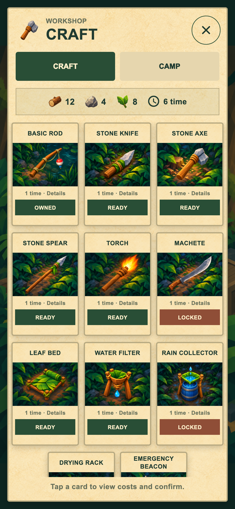
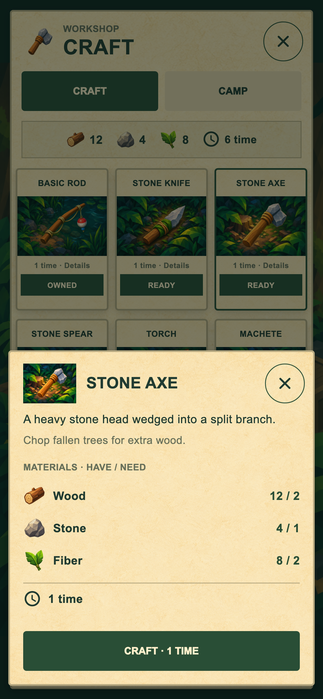
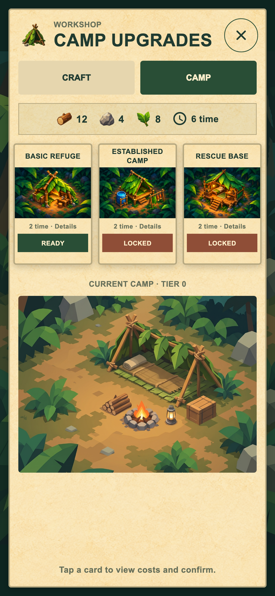
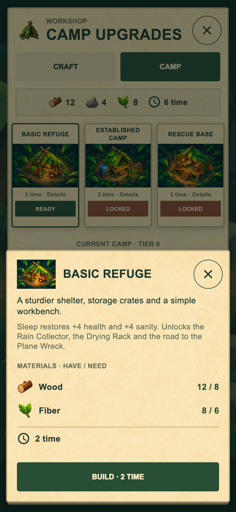
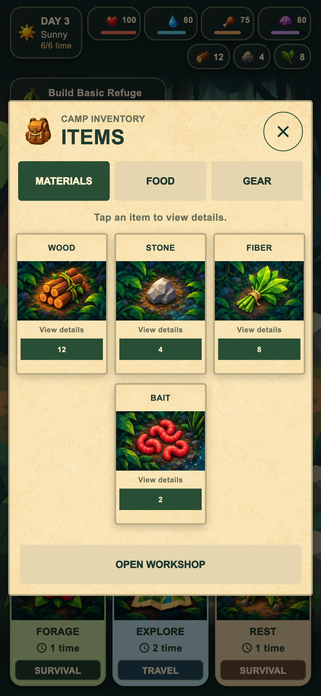
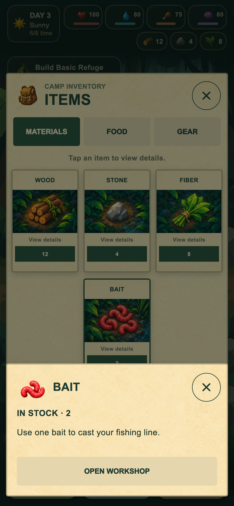
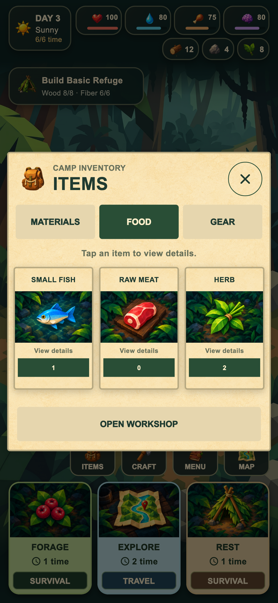
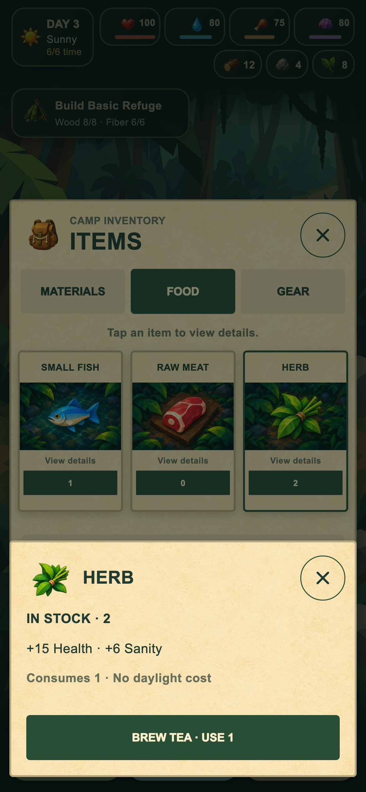
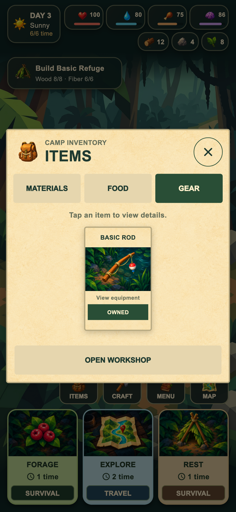
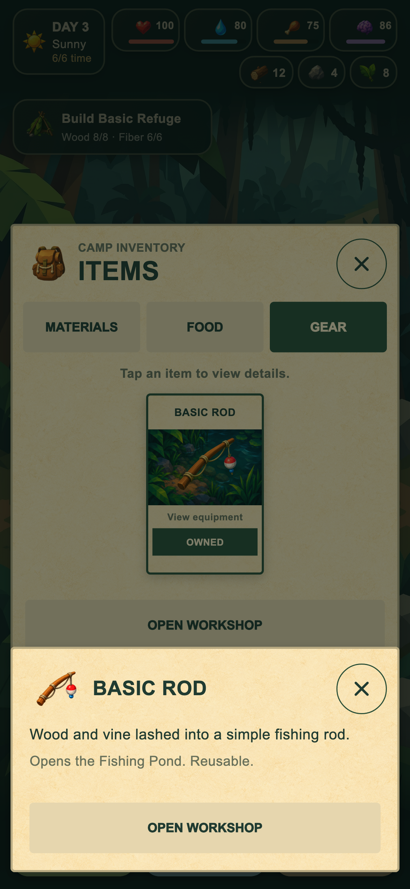

Valódi Flutter screenshotok, 390×844-es mobilnézetben. Craft, táborfejlesztés, Items és a koppintásra megnyíló részletpanelek. Kattints a képre a teljes mérethez.

01. Craft
02. Stone Axe – részletek
03. Táborfejlesztés
04. Basic Refuge – részletek
05. Items – Materials
06. Bait – részletek
07. Items – Food
08. Herb – használat
09. Items – Gear
10. Basic Rod – részletek